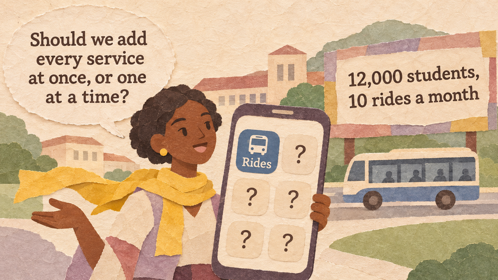
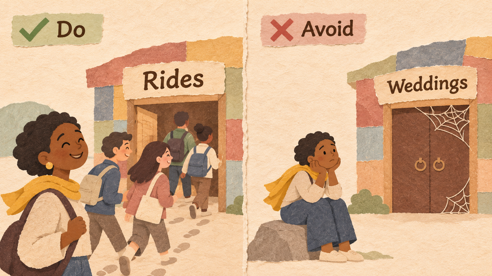
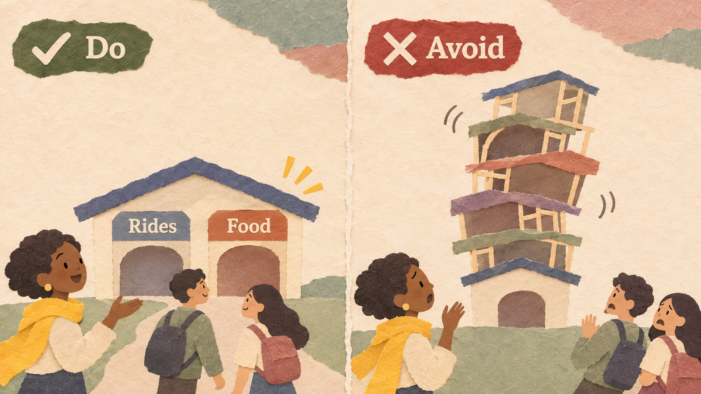
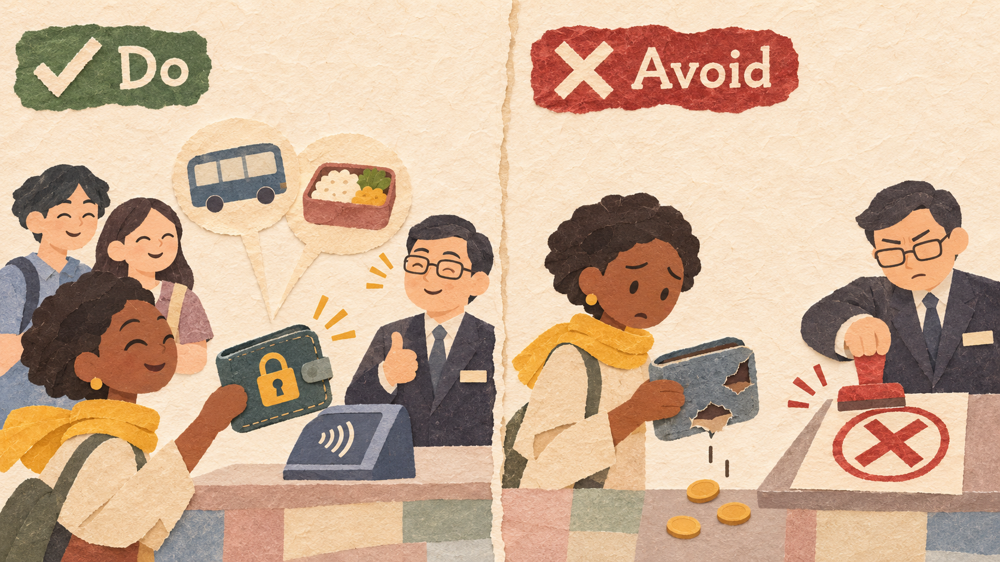
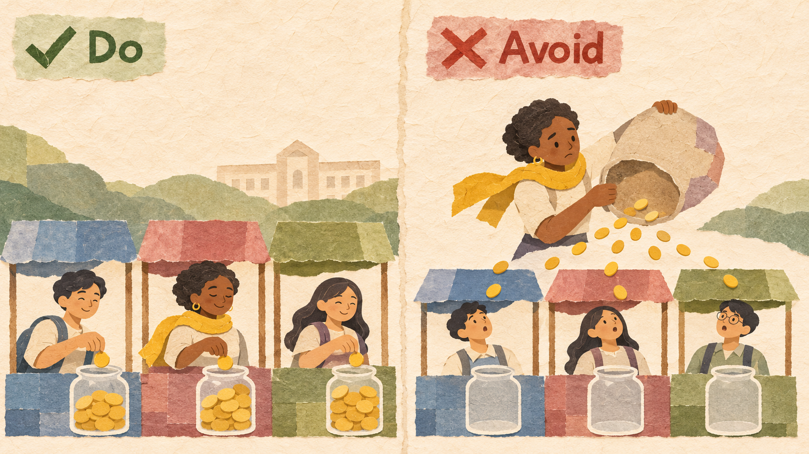

CampusGo is Ama's app for booking seats on campus shuttles. She wants it to become the one app for daily campus life. An investor says: "Launch food, laundry, printing, tickets, and a wallet at once, with big discounts."
| CAMPUSGO (ONE MONTH) | VALUE |
|---|---|
| Students who use the app | 12,000 |
| Shuttle rides per student per month | 10 |
| Profit per ride | $0.20 |
| Monthly profit (12,000 x 10 x $0.20) | $24,000 |
| Other services | None |
One app that people use very often becomes a single app for many daily services. It starts with a front door, a service people open many times a week, then adds services for the same users, such as food delivery, payments, and loans, under one account and one wallet. Each new service is cheaper to launch because the users are already there (Session 3.1). Grab and WeChat are the best-known examples.
The front door must bring users back many times a week. Rarely used services cannot hold up a super-app.

CampusGo is opened 10 times a month by 12,000 students, so a new service inside it is seen by many students right away.
Building a super-app around something people use once a year, such as booking graduation photos. Users forget the app.
Each new service should fit naturally next to the front door, and should be good before the next one is added.

Students take the shuttle to class, and many order lunch on the way. Food comes first; laundry only after food works well.
Launching many services at once. Each one is weak, users have bad experiences, and the whole app gets a bad name.
A wallet makes every service easier to use, but money and personal data need strong protection and must follow the law.

The CampusGo wallet works with a licensed bank partner, checks each user's identity, and pays for rides and food with one tap.
Holding users' money without the right licence or checks. Regulators can stop the service, and users stop trusting the app.
Subsidies can start a service, but every service should reach a positive contribution on its own. Stop paying people to use it.

CampusGo pays $1 of each food order for the first two months only, then checks whether food earns money without it.
Using discounts forever to keep users in every service. The app grows in users but loses more money each month.
Grab started in 2012 as a taxi-booking app in Malaysia and became a super-app across Southeast Asia, adding food delivery, package delivery, payments, and loans. For years it spent heavily on incentives and lost money. As it cut incentives, it improved: in 2024, revenue grew 19% to $2.8 billion and adjusted EBITDA (a measure of operating profit) turned positive at $313 million, though it still had a net loss of $158 million.
WeChat started in 2011 as a messaging app in China. In 2013 it added WeChat Pay. In 2014, at Chinese New Year, users could send digital red envelopes (gifts of money), and many linked their bank cards for the first time. In 2017 it added mini programs from other companies. In early 2025, WeChat had about 1.4 billion monthly users.
Paytm, a large Indian payments app, offered wallets, bank accounts, and many other services through Paytm Payments Bank. In January 2024, the Reserve Bank of India ordered the bank to stop taking new deposits and top-ups after February 29, 2024, because audits found "persistent non-compliances." Millions of users had to move their money elsewhere.
In 2019, Facebook announced Libra, a new digital currency for its apps, such as Messenger and WhatsApp. Governments and central banks worried about risks to money and privacy. After years of pushback, the project (renamed Diem) was shut down, and its technology was sold to Silvergate Bank in 2022 for about $182 million.
| EXAMPLE | RESULT | THE RULE THAT DECIDED IT |
|---|---|---|
| Grab | Good | A busy front door, then services for the same users (Rules 1 and 2) |
| Good | A daily habit, then a wallet people wanted (Rules 1 and 3) | |
| Paytm Payments Bank | Bad | Money service broke the rules (Rule 3) |
| Libra (Diem) | Bad | Too big a money service, too early (Rules 2 and 3) |
Uses per month = users x times each user opens the service per month
New service users = app users x share who try it
Contribution = revenue - direct costs - subsidies
What you give up to get something you value more.
A promise, written before you start, about which result would make you change your decision.
Example: "If food delivery does not reach a positive contribution by month 3 without discounts, we will not add laundry."
Six apps want to become super-apps:
| APP | ANSWER | WHY |
|---|---|---|
| (a) Messaging | Good | Every day |
| (b) Wedding planning | Weak | Once or twice in a lifetime |
| (c) Bus tickets | Good | Twice a day |
| (d) Car buying | Weak | Once in several years |
| (e) Mobile payments | Good | Several times a week |
| (f) Tax filing | Weak | Once a year |
| SERVICE (ONE MONTH) | REVENUE | DIRECT COSTS | SUBSIDIES |
|---|---|---|---|
| Rides | $50,000 | $30,000 | $5,000 |
| Food delivery | $40,000 | $30,000 | $15,000 |
| Groceries | $20,000 | $16,000 | $2,000 |
| Movie tickets | $5,000 | $2,000 | $6,000 |
12,000 students / $24,000 monthly profit from rides
Food, laundry, printing, tickets, and a wallet: $80,000 to build, plus $10,000 a month of discounts.
Expect 30% of students to use them, $3 profit each a month.
Food delivery and a simple wallet: $25,000, discounts only in the first two months ($2,000 a month).
Expect 25% to order food, $2 profit each a month. Laundry only if food works.
Explain a super-app and test whether a service can be its front door.
Calculate the contribution of each service with and without subsidies.
Compare adding services all at once with one at a time, and write a decision rule.
Grab Holdings (2025, February 20). Grab reports fourth quarter and full year 2024 results.
South China Morning Post (2018). Tencent's WeChat hits 1 billion monthly active users.
Reserve Bank of India (2024, January 31). Action against Paytm Payments Bank Ltd.
Banking Dive (2022, February 1). Diem to end crypto project, sell its assets to Silvergate Bank for $182M.